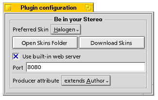
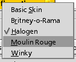
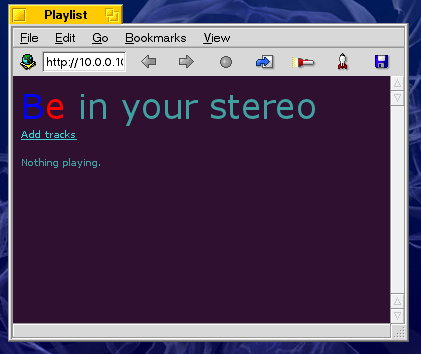
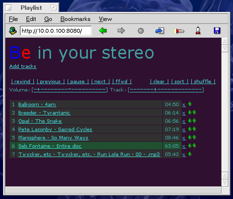
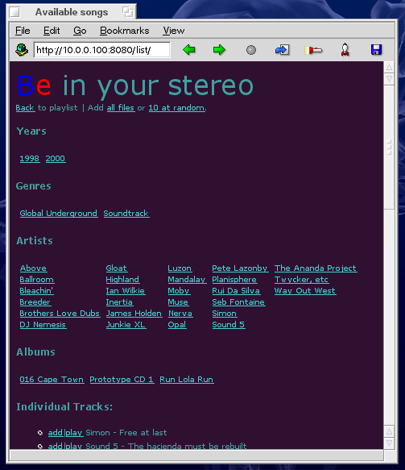
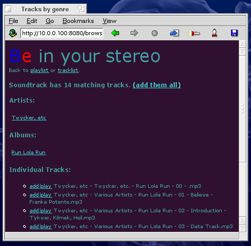
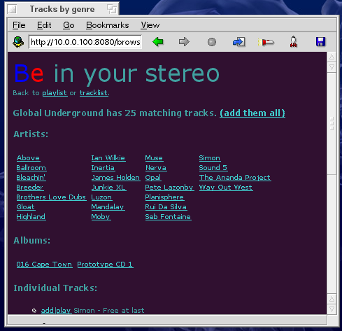
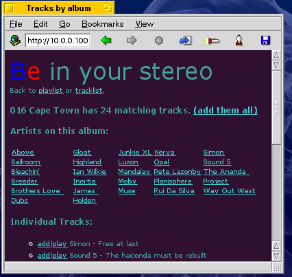
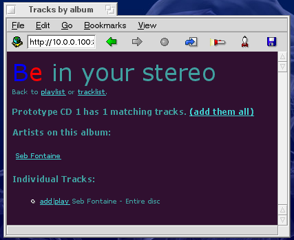
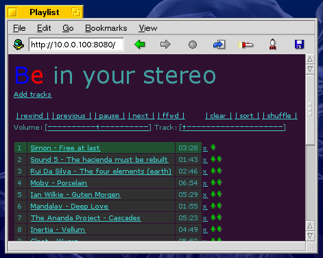

Usageof Be in your Stereo. |
|

The configuration panel for the plugin. |
Here are what the available settings mean:
 This setting is a popup-menu with a listing of all the directories in the skin folder. Each directory is assumed to contain one skin. The folder listing is live - that is, if you add new skins to the folder, the menu will be up to date immediately.
Choosing a skin here will change which directory the internal web server serves files from, and hence the way the program looks and feels.
The "Open Skins Folder" button will open a Tracker window on the skins folder so you can look around. "Download Skins" will spawn a web browser on the web site where you can download new skins.
The built-in web server has only one option: which port the web server listens on. For instance, if you indicate you want the web server to listen on port 4567, you should access the url http://127.0.0.0.1:4567/ to see Be in your Stereo.
If the internal web server is not good enough for your purposes, BIYS can operate with any web server that is smart enough to call PHP. It has been tested with Robin Hood with the PHP Handler. Consult your web server's documentation to learn how to set it up to use PHP. The

Now for the fun part. Start a browser, and point it at http://127.0.0.1:8080. If it doesn't work, look at troubleshooting. We'll start with what you would see if you didn't have anything in SoundPlay's playlists.
|

Nothing playing. |
If you have something playing, on the other hand, you'll see something like this:
|

A few files in the playlist. |
There are a few features to notice here. The standard play controls are present: click on pause to stop playback, then again to resume playback. Click ffwd to kick SoundPlay into 400%-speed playback, then again to go back to normal speed. rewind will do the same thing, but in reverse. The next and previous buttons will jump to the next and previous tracks in the playlist.
On the right are controls that affect the entire playlist: The clear button is like the eject button in SoundPlay's user interface: it throws out the entire playlist. The sort and shuffle buttons rearrange the playlist accordingly. Sorting is based purely on filename (because that's how SoundPlay does it, and SoundPlay is doing it for us).
Below the play buttons are volume and track-position controls. For volume, the leftmost dash is complete silence. The rightmost dash is the loudest SoundPlay can go. For track position, the leftmost dash is the beginning of the song, and the rightmost is the very end of the song. These sliders show you what the current volume and track position are with a +.
Clicking on the name of any song will jump straight to that song in the playlist, and clicking on the x next to a song will remove that song from the playlist. The up and down arrows can be used to rearrange files in the playlist.
Although not pictured here, if you have the download-links option turned on, there will be a button that will let you pull down a copy of the audio file to your local computer.
The "Add Tracks" button leads to the best features of the plugin, the cross-indexing of all your audio files:
|

Cross-referenced view of your audio file collection. |
There are four sections guaranteed to show up here. The plugin has looked at all your audio files, and determined the unique year, genre, artist, and album attribute values on those files. In the example above, there are two different years, two genres, and many artists represented on three albums.
The individual audio files which compose your collection will be listed next, if there aren't too many. If there are more than 60, the list will be suppressed.
Clicking down into, say, the Soundtrack genre gives me this:
|

A genre with one album. |
In this case, there is one album represented (Run Lola Run) with only one artist (Twycker). Notice that the Year attribute has been suppressed. Which attributes are cross-referenced depends on which one you're looking at, in a way which I hope is sensible.
Looking at the Global Underground genre, we see a remix album:
|

A genre with two albums, one of which is a remix album (with many artists on it). |
Here, there's two albums: GU016 Cape Town by Dave Seaman and Prototype 1 by Seb Fontaine, both published by the Global Underground label. I've given them their own genre (they deserve it). In this case, Dave Seaman's album is in many tiny audio files, with the original artists listed on the Artist attribute.
Perhaps this is a case for a DJ attribute, that's read along with (or besides or instead of) the Artist attribute. I could use your input if you have an opinion - see the giving help section.Looking at Seb Fontaine's artist index, we see the one track:
|

Seb Fontaine has one audio file in my collection. |
Drilling down into the GU016 album, we see the rest of the Global Underground tracks:
|

A view of one album - a remix album with many artists on it. |
Let's say that we decide to click on the (add them all) link now. This will take us back to the playlist:
|

A playlist with the GU016 album added to it. |
... and we can start partying!
If you change the value of an attribute, the plugin will notice and do the appropriate reindexing. Please note that the plugin is not watching for new filename changes.
Which volumes are scanned? When the SoundPlay plugin starts, it will look through any BFS volumes that have indices built on Audio:Artist, Audio:Genre, Audio:Year, and Audio:Album attributes. BFS is not specifically required, only the ability to attribute searches. For now that implies only BFS, and forever that excludes Windows (FAT16/32) and Linux (ext2). If you have a new volume you want included, mount it, then restart SoundPlay.
What if I unmount a volume? BeOS (correctly) refuses to do that as long as SoundPlay has scanned the some items on the disk. To unlock the drive so you can unmount or eject it, quit SoundPlay, then unmount the volume in question.